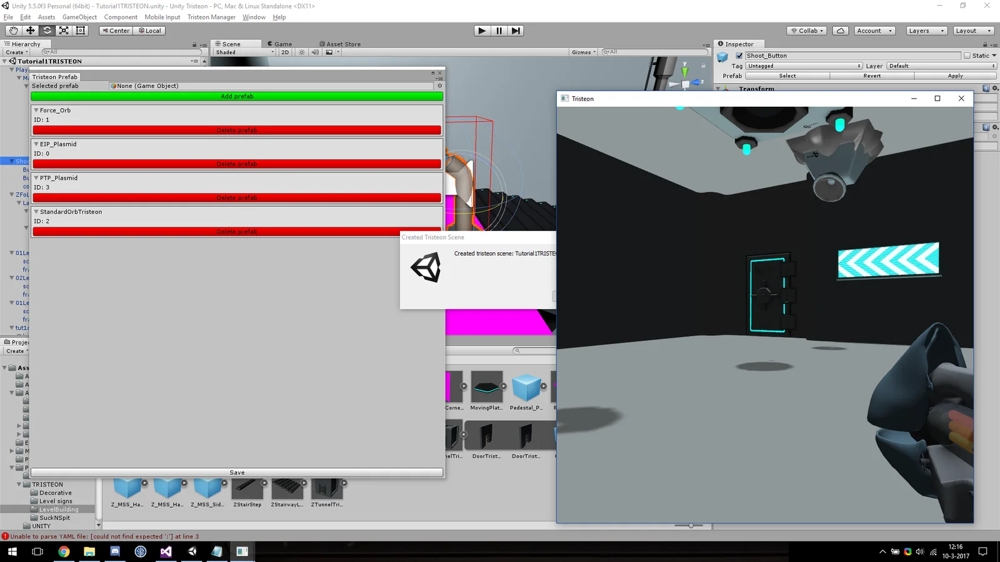
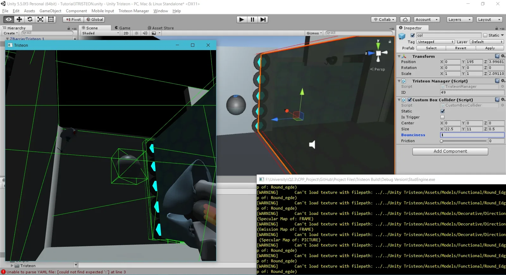
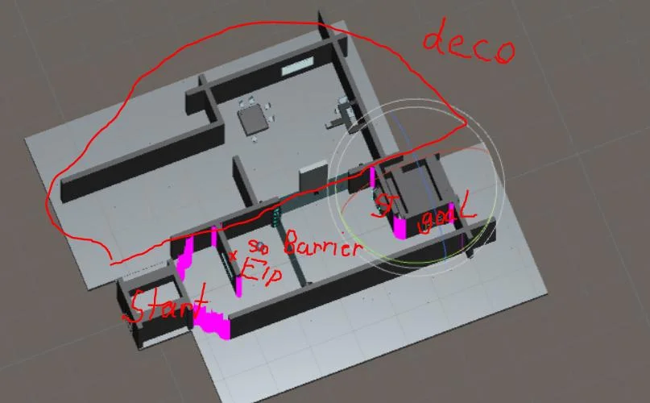

Unityをレベルエディターに
エディターのない自作エンジンでは、レベルを手で書くことになります。しかも一つの課題でエンジンとゲームの両方を作る必要がありました。そこでUnityをエディターにしました。デザイナーはUnityで、C++側とフィールド単位で対応する独自コンポーネント（マネージャー、プレイヤーコントローラー、リジッドボディ、コライダー）を使ってレベルを作ります。
独自のエクスポーターがシーンをシリアライズし、エンジンはそれを読み込んで型名からすべてのオブジェクトを復元します。デザイナーは使い慣れたツールのまま作業でき、私たちはエディターを書く必要がありませんでした。

物理エンジンをゼロから
Orbは物理パズルゲームなので、物理の信頼性が欠かせません。重力・抵抗・反発・摩擦をもつリジッドボディ、速い物体が壁をすり抜けない連続衝突判定付きのAABB衝突、パズル用のトリガー、レイキャストを自分で実装しました。
シリアライズはポリモーフィックなオブジェクトや共有ポインターに対応し、同じコードでシーンとプレハブの保存、Unityから書き出したデータの読み込みを行います。

エンジン上で動くゲーム
ゲームプレイ面では、キャラクターとカメラのコントローラー、各パズルを動かすトリガーのロジック、オーブそのものを書きました。デザイナーは各部屋をまず紙に設計し、それがUnityのシーンに、そしてエンジンのレベルになりました。

レンダラーを担当したLeon Brandsと共同開発。その後二人でTristeonを作りました。